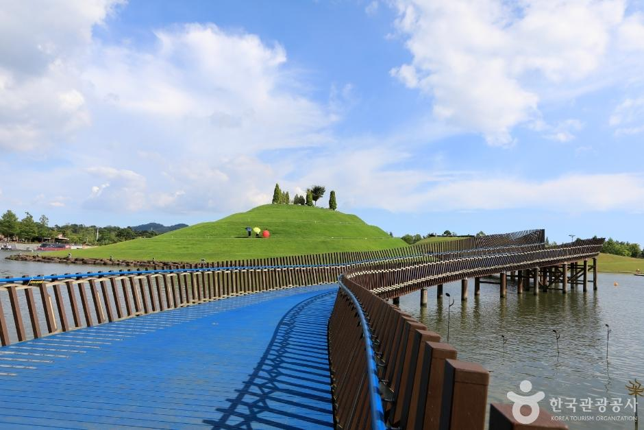
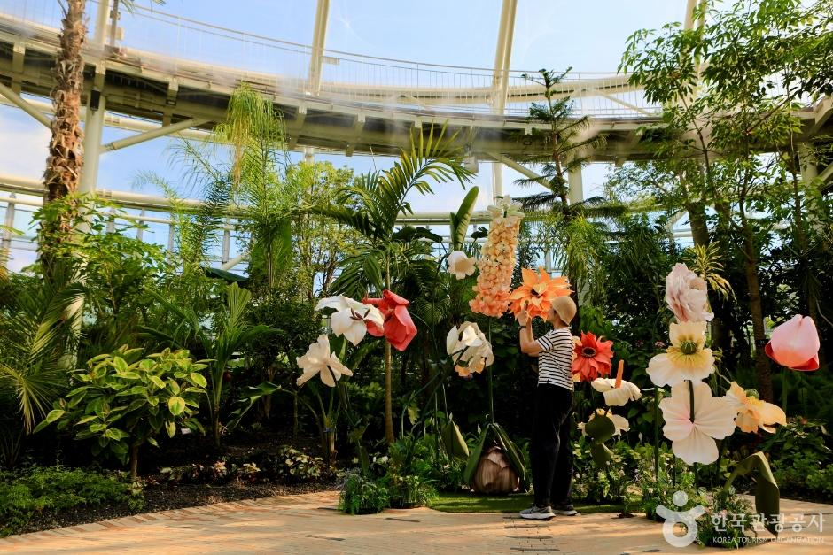
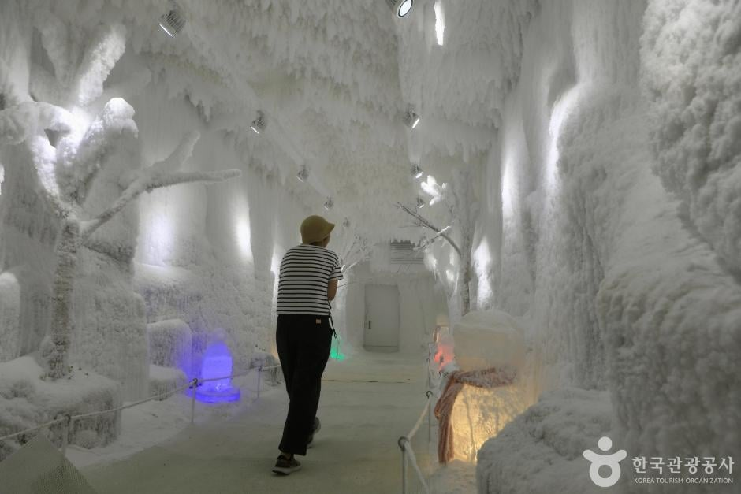
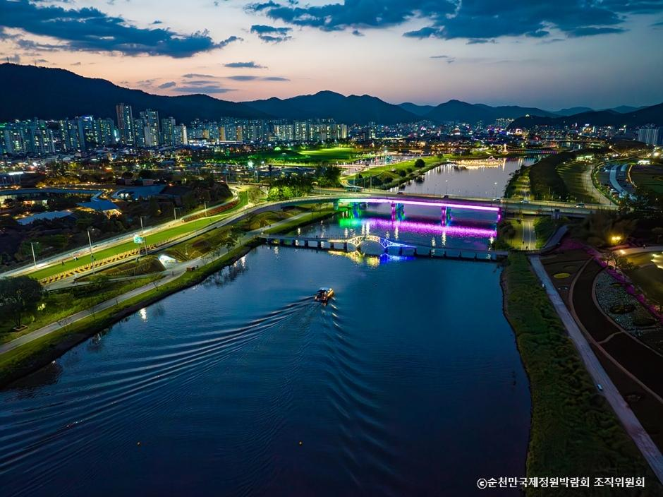
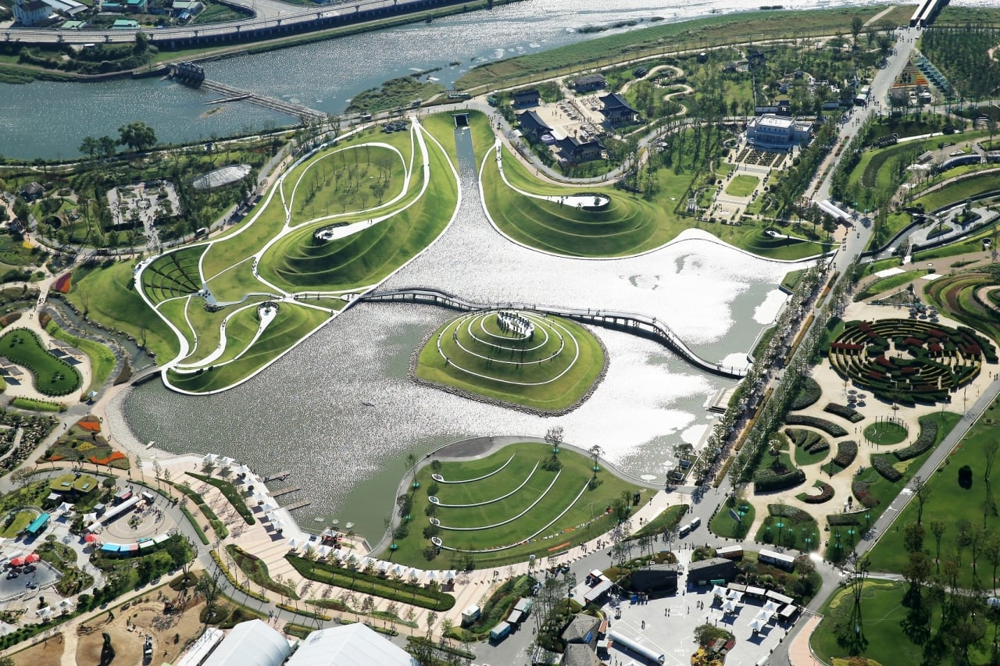
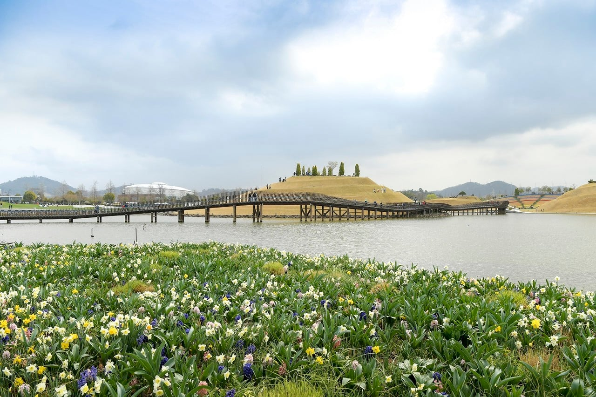
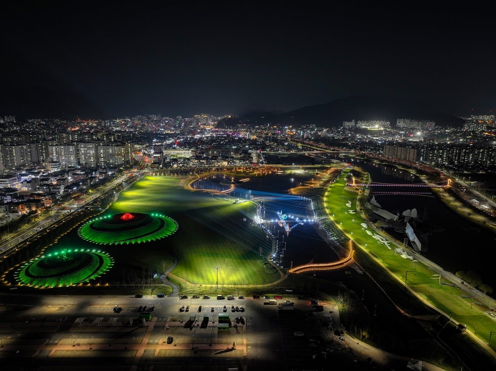
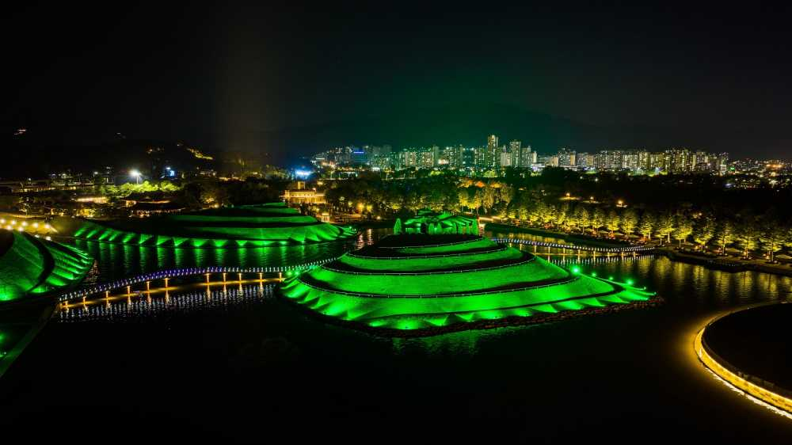
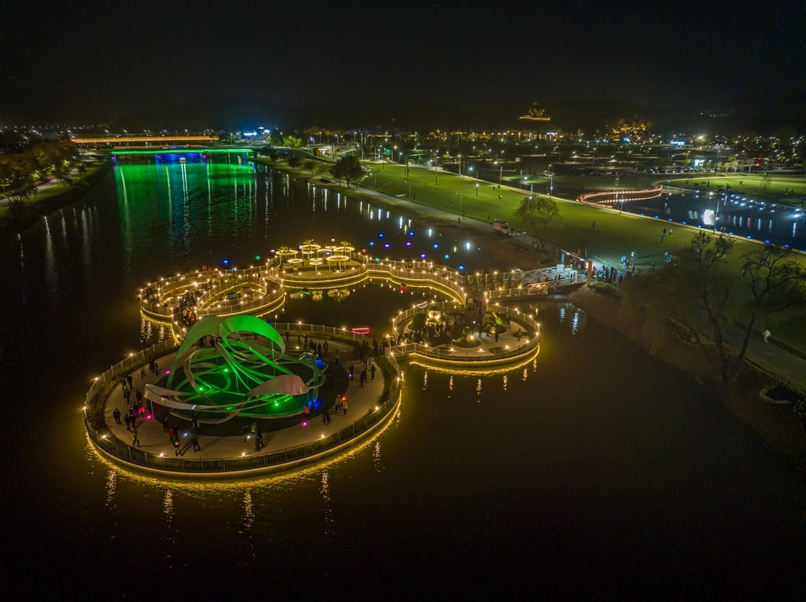
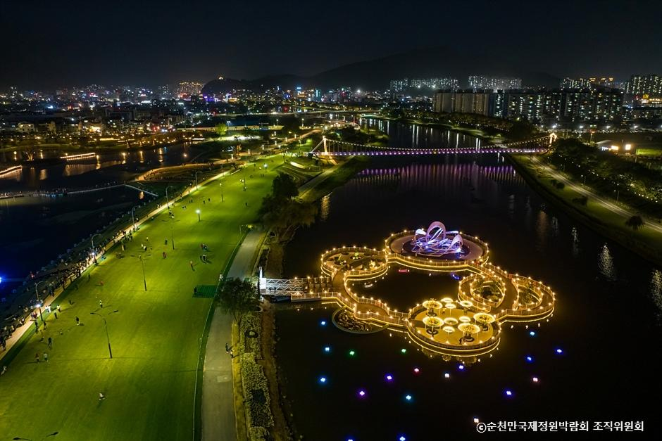
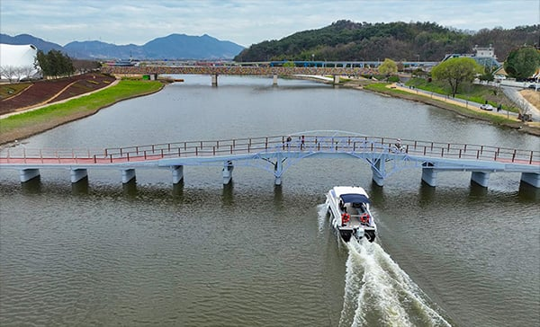
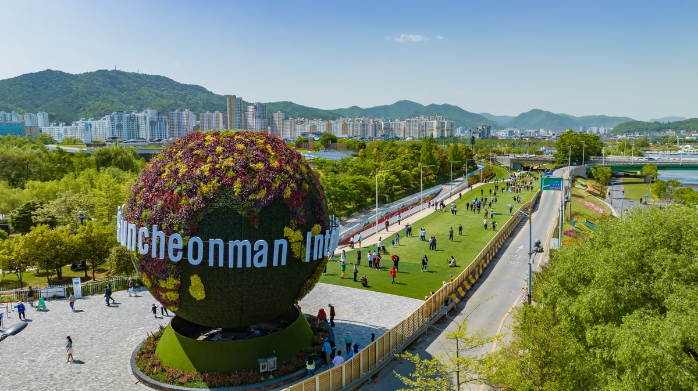
그것은 2023 순천만 국제정원 박람회 (총비용 대략 2,000억)
개최기간 2023년 기준 행사기간 214일 박문자 980만명
경제수익 350억원/ 지역경제 파급효과 3조1천억원
이후 기간은 줄었지만 매년 수백억 이상의 수익 발생
대한민국에서 여행 가능한 어르신들은 전부 방문했다고 하는 얘기가 있음.
최초 개장은 2013년이었고 2017년까지 600만명이 방문했음
2019년에는 에버랜드에 이어 전국 두번째로 많은 방문객이 다녀감.
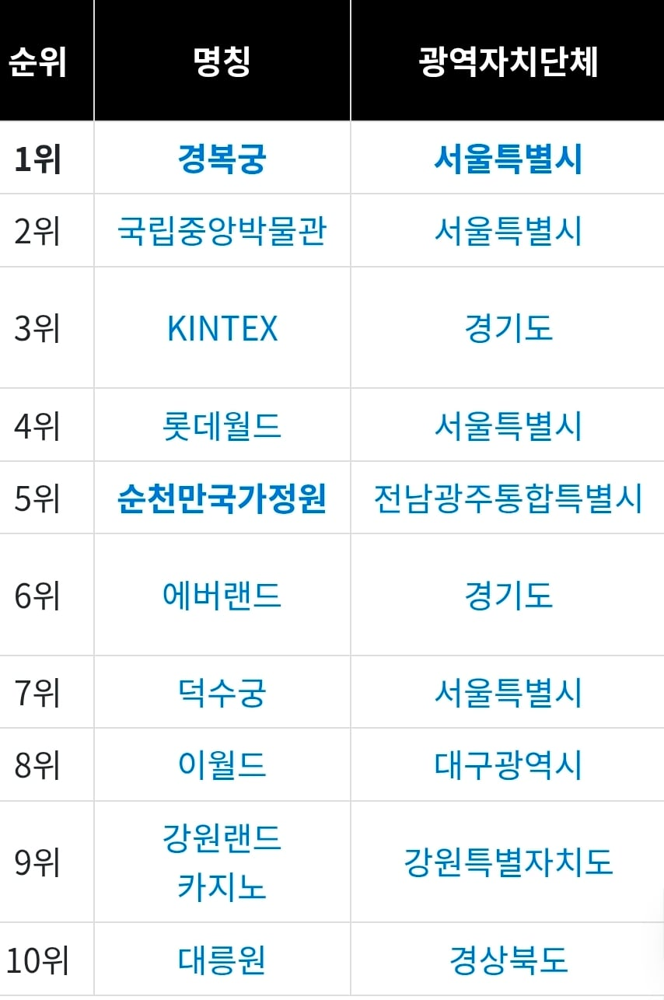
2025년 대한민국 인기 관광지 순위
사실상 지방 관광지 중 no.1
이런 과정 중에 자신감을 얻은 순천시는 2030 부산엑스포 유치에 실패한 부산광역시의 못 다 이룬 꿈을 2033년 국제원예생산자협회가 주관하는 A1등급 정원박람회로 이루겠다는 포부를 밝힘.
참고로 서울사는 우리 가족도 두번이나 갔다옴.
이거 한국인인 나한테는 무척 아름다운 공간이었는데 외국인한테는 별 어필 안되는게 신기했음. 걔네는 자연 이라는 컨텐츠로는 dmz를 선호하지 여길 선호하진 않는 거 같음. 물어보니까 하나같이 그냥 이쁜 정원이네 라고만 대답 함. 뭔가 좀 더 특색을 살릴게 있으면 좋겠음 철새를 디립다 민다든지